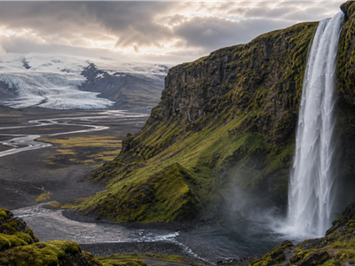

National day
Iceland National Day
A compact guide to the annual civic date, what it means and what visitors should check before going.

Culture calendarNational daysIndependence, constitutions, republic days and civic identity dates.
Why the date mattersa defining civic date in Iceland's national calendar
The exact programme changes by city and year, but the date remains the yearly anchor.
What visitors noticeFlags, ceremonies and public life
National days are often best read through local squares, official buildings, streets and evening gatherings.
Planning lensCheck official local programmes
Public transport, opening hours and security routes can change because this is a public holiday.
At a glance
1Public meaning
National identity
2Main date
17 June
3Best view
Reykjavik